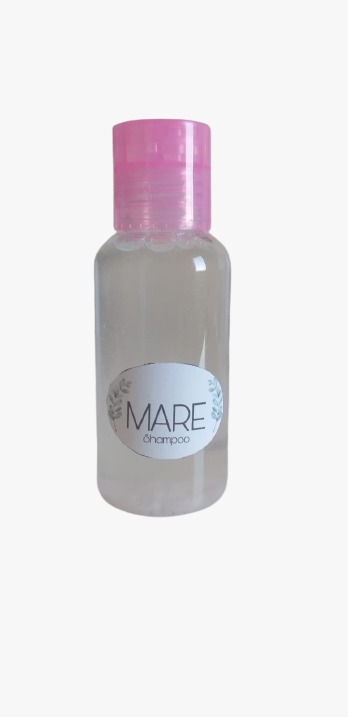
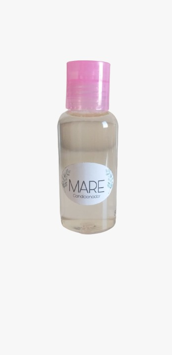

Uma marca vegana,com produtos 100% naturais e sustentáveis!

O shampoo antioleosidade MARE é o que você precisa para colocar um fim na oleosidade excessiva dos fios! Ele limpa profundamente de forma suave, sem ressecar ou causar irritações no couro cabeludo.

O condicionador antioleosidade MARE é uma textura leve que oferece hidratação equilibrada para os fios , deixando-os leves e com movimento o dia todo. Regula a oleosidade sem efeito rebote.